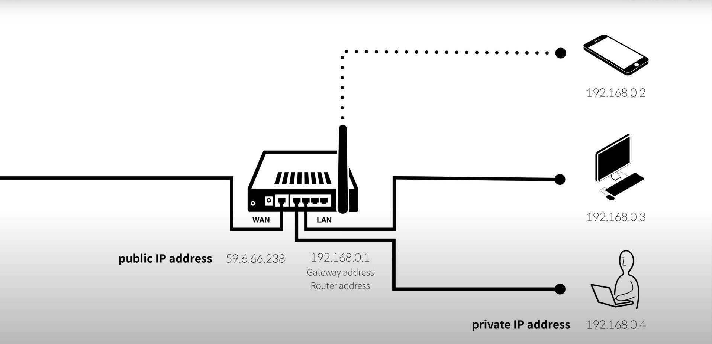
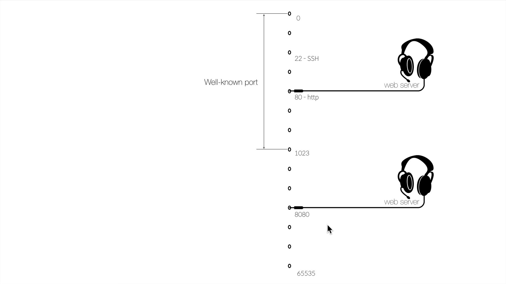

WAN의 IP Address는 Public IP Address. 즉, 사진의 59.6.6623은 Public IP Address이다.
LAN의 IP Address는 Private IP Address. 즉, 사진의 192.168.0.2 / 192.168.0.3 등은 Private IP Address이다.
공유기의 192.168.0.1 IP주소는 Gateway Address 또는 Router Address라고 한다.
[클라이언트가 외부 네트워크 접속 순서]
포트 : 하나의 컴퓨터에는 여러개의 서버라 설치 될 수 있습니다. 클라이언트가 컴퓨터에 접속할 때 어떤 서버와 접속하려고 하는지는 구분할 수 있는 방법이 필요합니다.
이를 위해서 준비된 개념이 포트입니다. ip 주소가 컴퓨터에 접속하는 주소라면, 포트는 컴퓨터 안에 설치된 서버에 접속하는 주소라고 할 수 있습니다.
